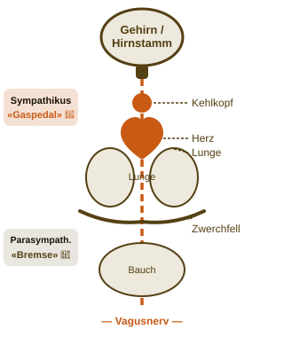
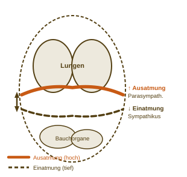
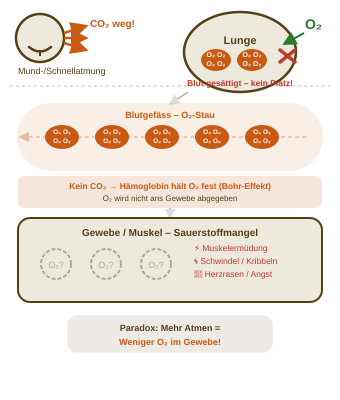

Richtig atmen – drei
Werkzeuge für jeden
Einsatz bereit
Atemregulation zur Auf- und Abregulierung
Was du heute mitnimmst – das Lernziel
Nach dieser Lektion könnt ihr alle 3 Übungen korrekt ausführen – und auf der Karte festhalten, welche für euren Einsatz passt und warum.
Wahr oder Falsch – Menti
Smartphone raus.
QR-Code scannen
und abstimmen.
und abstimmen.

📱 menti-qr.png
in Ordner legen
in Ordner legen
Die Basis – Euer Nervensystem
Ein Nervensystem, ein Verschaltungsmuster.
In unterschiedliche Funktionsrichtungen organisiert:
Sympathikus – das «Gaspedal» – wirkt aktivierend
Parasympathikus – die «Bremse» – wirkt beruhigend

Euer grösster Atemmuskel – Das Zwerchfell
Grösste Atemmuskulatur.
«Blasebalg», der je nach Einsatz zur Aktivierung von Sympathikus oder Parasympathikus dienen kann.

🔥 Breath of Fire
① «Atmen ist kaum steuerbar» → FALSCH ✓
Der Schalter – Vagusnerv und CO2-Toleranz
- Längstes Nervenkabel in eurem Körper (verläuft von Hirnstamm, Kehlkopf, Herz, Lunge, Zwerchfell, Bauch)
- Datenleitung von Gaspedal und Bremse
- CO₂ hilft roten Blutkörperchen, Sauerstoff ins Gewebe abzugeben
- Wenn zu wenig CO₂ im Körper bleibt – bleibt O₂ im Blut kleben

😮💨 Physiological Sigh
③ «CO₂ ist Abfall» → FALSCH ✓
Kein Notausgang – Die Nase
Summen durch die Nase = Stickstoffmonoxid ×15.
Klingt nach Yoga.
Ist Physiologie.
No NO
NO×15
🎵 Summen (Bhramari)
② «Nasenatmung beim Sport ist gesünder» → WAHR ✓
Welche Übung nehmt ihr mit – eure Wahl
🔥
Breath of Fire
Aktivierung · Sympathikus
😮💨
Physiological Sigh
Abregulierung · Parasympathikus
🎵
Summen (Bhramari)
Vagusnerv · Stickstoffmonoxid
Vielen Dank für eure Aufmerksamkeit –
ganz viel Glück und Schnuuf für eure Abschlusslektionen! 🌬️
ganz viel Glück und Schnuuf für eure Abschlusslektionen! 🌬️
1 / 8
F = Vollbild · Klick = weiter